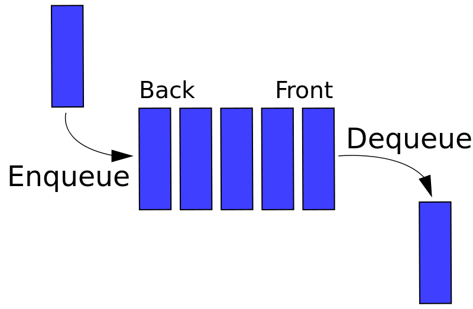

TensorFlow and Queues
Monday March 27, 2017
There are many ways to implement queue data structures, and TensorFlow has some of its own.

FIFO Queue with a list
In Python, a list can implement a first-in first-out (FIFO) queue, with slightly awkward syntax:
>>> my_list = []
>>> my_list.insert(0, 'a')
>>> my_list.insert(0, 'b')
>>> my_list.insert(0, 'c')
>>> my_list.pop()
'a'
>>> my_list.pop()
'b'
>>> my_list.pop()
'c'A Python list is not a very efficient implementation for a first-in first-out queue, and it doesn't offer mechanisms for limiting the total length of the queue at any given time, for example. But also, queues are a common way to implement communication between threads, and not everything you might do with a list is perfectly thread-safe (though it is surprisingly close; thanks GIL).
FIFO Queue with the Python standard library
The Python standard library's queue (Queue in Python 2) provides several queue options. The queue.Queue class implements a thread-safe FIFO queue:
>>> import queue
>>> my_queue = queue.Queue()
>>> my_queue.put('a')
>>> my_queue.put('b')
>>> my_queue.put('c')
>>> my_queue.get()
'a'
>>> my_queue.get()
'b'
>>> my_queue.get()
'c'When making a queue.Queue, you can specify an integer maxsize argument to set a bound on how many things can be in the queue at any given time. The default is zero, which makes a queue that can store (theoretically) any number of things. And there are no restrictions on what you can put in; anything in Python can be added to one of these queues.
Why use TensorFlow Queues?
TensorFlow also offers a number of queue options. There are a couple reasons to use TensorFlow queues over standard Python queues:
- TensorFlow queues live in TensorFlow computation graphs, with the attendant benefits of unifying things there and allowing distributed graph computation.
- TensorFlow queues offer a few more methods than standard Python queues, like
dequeue_many, which is good for getting training batches. - TensorFlow queues work with additional TensorFlow constructs, like the QueueRunner.
- TensorFlow offers queue variants not in the Python standard library: the PaddingFIFOQueue and RandomShuffleQueue.
FIFO Queue with TensorFlow
Here's a standard TensorFlow FIFOQueue:
>>> import tensorflow as tf
>>> letter = tf.placeholder(tf.string)
>>> queue = tf.FIFOQueue(capacity=10, dtypes=[tf.string])
>>> enqueue = queue.enqueue(letter)
>>> dequeue = queue.dequeue()
>>> session = tf.Session()
>>> session.run(enqueue, feed_dict={letter: 'a'})
>>> session.run(enqueue, feed_dict={letter: 'b'})
>>> session.run(enqueue, feed_dict={letter: 'c'})
>>> session.run(dequeue)
'a'
>>> session.run(dequeue)
'b'
>>> session.run(dequeue)
'c'There's a little extra code to deal with the computation graph, and the TensorFlow queue requires a capacity argument and a dtypes argument.
The capacity is like the maxsize of a regular Python queue.
The dtypes argument is a list of Tensorflow data types. The elements added to the queue will always be lists of tensors with the specified data types. Here, we add a single string tensor at a time to the queue.
Comparing Python standard library and TensorFlow queue offerings
Here's a listing of queue types in the Python queue library and in TensorFlow.
- Python standard: queue.Queue / TensorFlow: FIFOQueue
- Python standard: queue.LifoQueue / TensorFlow: no close equivalent
- Python standard: queue.PriorityQueue / TensorFlow: PriorityQueue
- Python standard: no close equivalent / TensorFlow: PaddingFIFOQueue
- Python standard: no close equivalent / TensorFlow: RandomShuffleQueue
Priority Queue with the Python standard library and TensorFlow
A priority queue lets you assign a priority to each item as it is added, and the item that comes out when you next de-queue is the item with the highest priority currently in the queue. Higher priority is represented by lower numbers.
Both the standard Python queue library and TensorFlow have priority queues.
>>> import queue
>>> my_queue = queue.PriorityQueue()
>>> my_queue.put([4, 'a'])
>>> my_queue.put([1, 'b'])
>>> my_queue.put([2, 'c'])
>>> my_queue.get()
[1, 'b']
>>> my_queue.get()
[2, 'c']
>>> my_queue.get()
[4, 'a']The TensorFlow priority queue is just like the standard Python one, but with a little more strictness on types. When adding to the queue, the first tensor provided must be tf.int64, the priority.
>>> import tensorflow as tf
>>> priority = tf.placeholder(tf.int64)
>>> letter = tf.placeholder(tf.string)
>>> queue = tf.PriorityQueue(capacity=10, types=[tf.string], shapes=[[]])
>>> enqueue = queue.enqueue([priority, letter])
>>> dequeue = queue.dequeue()
>>> session = tf.Session()
>>> session.run(enqueue, feed_dict={priority: 4, letter: 'a'})
>>> session.run(enqueue, feed_dict={priority: 1, letter: 'b'})
>>> session.run(enqueue, feed_dict={priority: 2, letter: 'c'})
>>> session.run(dequeue)
[1, 'b']
>>> session.run(dequeue)
[2, 'c']
>>> session.run(dequeue)
[4, 'a']As of TensorFlow 1.0.1 at least, tf.PriorityQueue calls its argument types rather than dtypes, and it seems to be requiring the shapes argument in spite of the documentation.
TensorFlow's PaddingFIFOQueue
The PaddingFIFOQueue has mini-batch model training in mind. It allows you to put in tensors of variable size, and when using dequeue_many, shorter ones get zero-padded to the maximum size in the batch.
import tensorflow as tf
numbers = tf.placeholder(tf.int64)
queue = tf.PaddingFIFOQueue(capacity=10, dtypes=[tf.int64], shapes=[[]])
enqueue = queue.enqueue(numbers)
dequeue_many = queue.dequeue_many(n=3)
session = tf.Session()
session.run(enqueue, feed_dict={numbers: [1]})
session.run(enqueue, feed_dict={numbers: [2, 3]})
session.run(enqueue, feed_dict={numbers: [3, 4, 5]})
session.run(dequeue_many)
array([[1, 0, 0],
[2, 3, 0],
[3, 4, 5]])TensorFlow's RandomShuffleQueue
The RandomShuffleQueue also has batching in mind. It draws randomly from items currently in the queue.
To prevent pulling out items as they go in (not at all randomly) the RandomShuffleQueue has an argument min_after_dequeue which ensures that there are at least that many (plus the number being drawn) to randomly draw from. This requirement is dropped after the queue eventually has .close() called on it, so that all items can be drawn.
>>> import tensorflow as tf
>>> letter = tf.placeholder(tf.string)
>>> queue = tf.RandomShuffleQueue(capacity=10, dtypes=[tf.string],
... min_after_dequeue=2)
>>> enqueue = queue.enqueue(letter)
>>> dequeue = queue.dequeue()
>>> session = tf.Session()
>>> session.run(enqueue, feed_dict={letter: 'a'})
>>> session.run(enqueue, feed_dict={letter: 'b'})
>>> session.run(enqueue, feed_dict={letter: 'c'})
>>> session.run(dequeue)
'b' # or 'a', or 'c'Queues inside TensorFlow
Some parts of TensorFlow automatically create and use queues. For example, tf.train.string_input_producer (among others in input.py) makes a queue, and a QueueRunner, and sets up a TensorBoard summary op.
I'm working on Building TensorFlow systems from components, a workshop at OSCON 2017.